L5 高可用架构 - MySQL 复制
1 MySQL 复制架构
数据库复制本质上就是数据同步。MySQL 数据库是基于二进制日志（binary log）进行数据增量同步，而二进制日志记录了所有对于 MySQL 数据库的修改操作。
在默认 ROW 格式二进制日志中，一条 SQL 操作影响的记录会被全部记录下来，比如一条 SQL语句更新了三行记录，在二进制日志中会记录被修改的这三条记录的前项（before image）和后项（after image）。
对于 INSERT 或 DELETE 操作，则会记录这条被插入或删除记录所有列的信息，我们来看一个例子：
DELETE FROM orders_test
WHERE o_orderdate = '1997-12-31';
Query OK, 2482 rows affected (0.07 sec)
上面这条 SQL 执行的是删除操作，一共删除了有 2482 行记录。可以在 mysql 命令行下使用命令 SHOW BINLOG EVENTS 查看某个二进制日志文件的内容，比如上述删除操作发生在二进制日志文件 binlog.000004 中，你可以看到
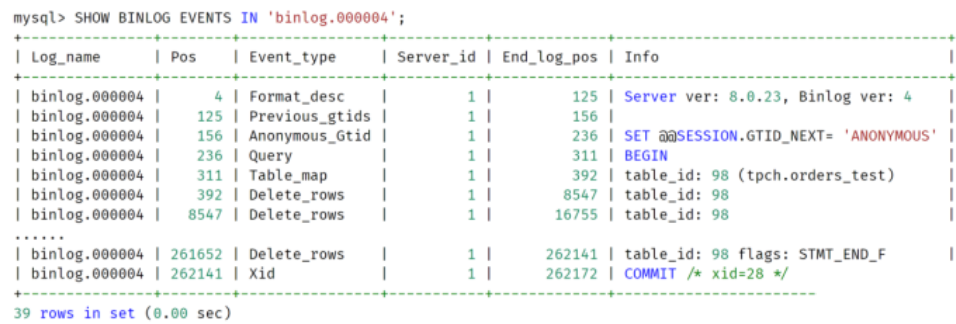
通过 MySQL 数据库自带的命令 mysqlbinlog，可以解析二进制日志，观察到更为详细的每条记录的信息，比如：
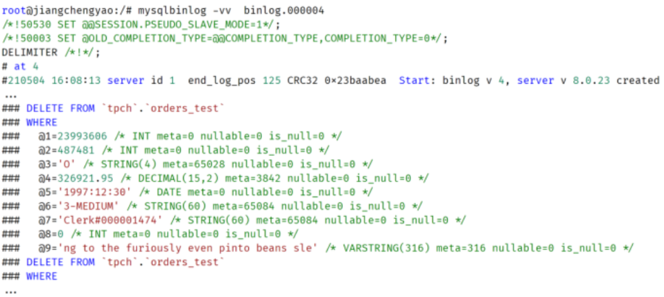
你可以通过二进制日志记录看到被删除记录的完整信息，还有每个列的属性，比如列的类型，是否允许为 NULL 值等。
如果是 UPDATE 操作，二进制日志中还记录了被修改记录完整的前项和后项，比如：
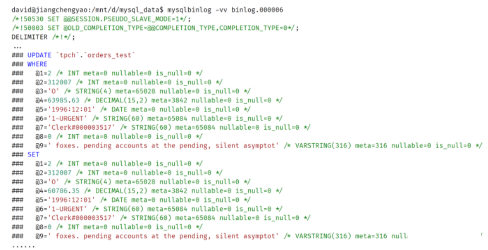
在有二进制日志的基础上，MySQL 数据库就可以通过数据复制技术实现数据同步了。而数据复制的本质就是把一台 MySQL 数据库上的变更同步到另一台 MySQL 数据库上。下面这张图显示了当前 MySQL 数据库的复制架构：
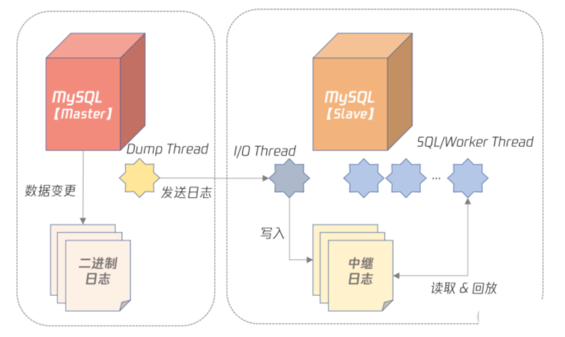
可以看到，在 MySQL 复制中，一台是数据库的角色是 Master（也叫 Primary），剩下的服务器角色是 Slave（也叫 Standby）：
- Master 服务器会把数据变更产生的二进制日志通过 Dump 线程发送给 Slave 服务器；
- Slave 服务器中的 I/O 线程负责接受二进制日志，并保存为中继日志；
- SQL/Worker 线程负责并行执行中继日志，即在 Slave 服务器上回放 Master 产生的日志。
MySQL 的复制相比其他数据库，如 Oracle、PostgreSQL 等，非常灵活，用户可以根据自己的需要构建所需要的复制拓扑结构，比如：
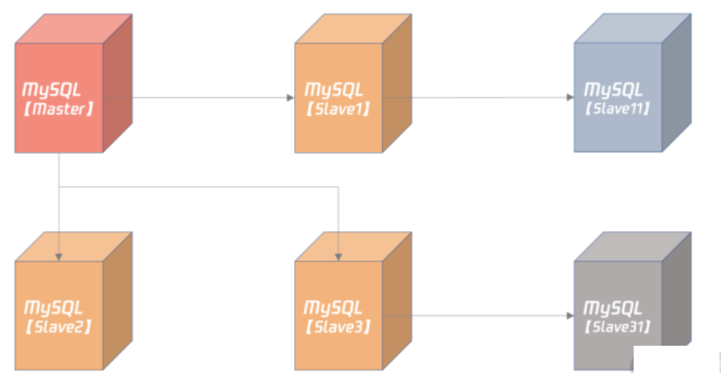
在上图中，Slave1、Slave2、Slave3 都是 Master 的从服务器，而 Slave11 是 Slave1 的从服务器，Slave1 服务器既是 Master 的从机，又是 Slave11 的主机，所以 Slave1 是个级联的从机。同理，Slave3 也是台级联的从机。
MySQL 复制配置
搭建 MySQL 复制实现非常简单，基本步骤如下：
- 创建复制所需的账号和权限；
- 从 Master 服务器拷贝一份数据，可以使用逻辑备份工具 mysqldump、mysqlpump，或物理备份工具 Clone Plugin；
- 通过命令 CHANGE MASTER TO 搭建复制关系；
- 通过命令 SHOW SLAVE STATUS 观察复制状态。
gtid_mode = on
enforce_gtid_consistency = 1
binlog_gtid_simple_recovery = 1
relay_log_recovery = ON
master_info_repository = TABLE
relay_log_info_repository = TABLE
上述设置都是用于保证 crash safe，即无论 Master 还是 Slave 宕机，当它们恢复后，连上主机后，主从数据依然一致，不会产生任何不一致的问题
MySQL复制类型及应用选项
异步复制
在异步复制（async replication）中，Master 不用关心 Slave 是否接收到二进制日志，所以 Master 与 Slave 没有任何的依赖关系。你可以认为 Master 和 Slave 是分别独自工作的两台服务器，数据最终会通过二进制日志达到一致。
异步复制的性能最好，因为它对数据库本身几乎没有任何开销，除非主从延迟非常大，Dump Thread 需要读取大量二进制日志文件。
半同步复制
半同步复制要求 Master 事务提交过程中，至少有 N 个 Slave 接收到二进制日志，这样就能保证当 Master 发生宕机，至少有 N 台 Slave 服务器中的数据是完整的。
半同步复制并不是 MySQL 内置的功能，而是要安装半同步插件，并启用半同步复制功能，设置 N 个 Slave 接受二进制日志成功，比如：
plugin-load="rpl_semi_sync_master=semisync_master.so;rpl_semi_sync_slave=semisync_slave.so"
rpl-semi-sync-master-enabled = 1
rpl-semi-sync-slave-enabled = 1
rpl_semi_sync_master_wait_no_slave = 1
上面的配置中：
- 第 1 行要求数据库启动时安装半同步插件；
- 第 2、3 行表示分别启用半同步 Master 和半同步 Slave 插件；
- 第 4 行表示半同步复制过程中，提交的事务必须至少有一个 Slave 接收到二进制日志。
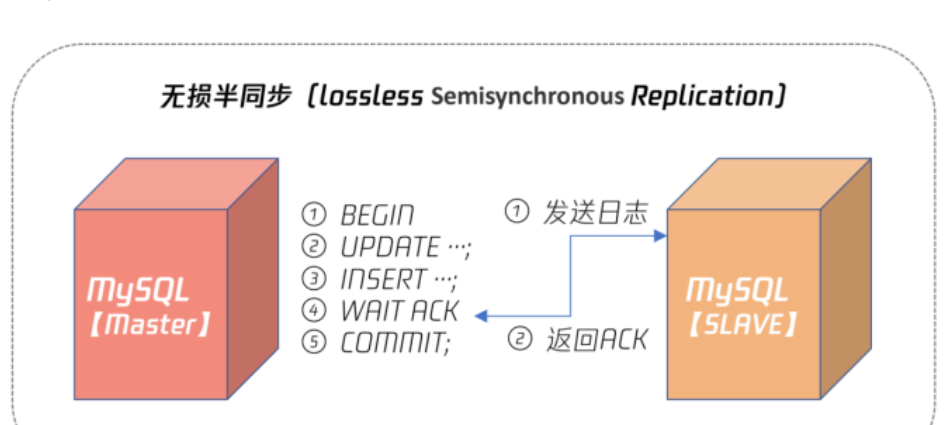
所以，对于任何有数据一致性要求的业务，如电商的核心订单业务、银行、保险、证券等与资金密切相关的业务，务必使用无损半同步复制。这样数据才是安全的、有保障的、即使发生宕机，从机也有一份完整的数据。
多源复制
无论是异步复制还是半同步复制，都是 1 个 Master 对应 N 个 Slave。其实 MySQL 也支持 N 个 Master 对应 1 个 Slave，这种架构就称之为多源复制。
多源复制允许在不同 MySQL 实例上的数据同步到 1 台 MySQL 实例上，方便在 1 台 Slave 服务器上进行一些统计查询，如常见的 OLAP 业务查询。
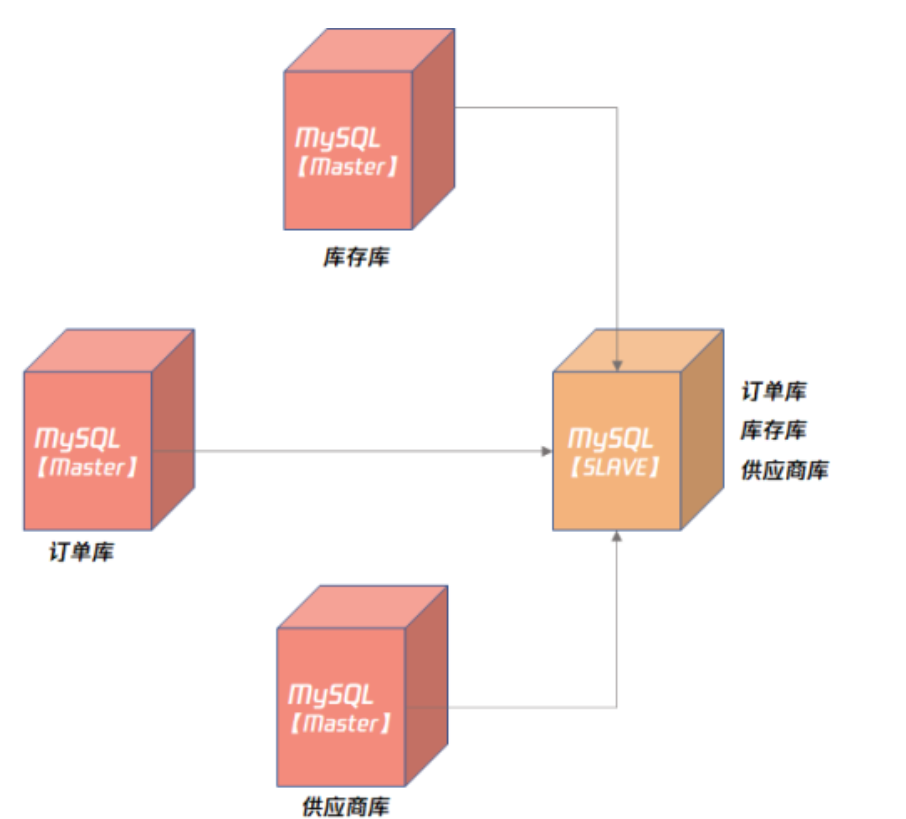
延迟复制
复制架构，Slave 在接收二进制日志后会尽可能快地回放日志，这样是为了避免主从之间出现延迟。而延迟复制却允许Slave 延迟回放接收到的二进制日志，为了避免主服务器上的误操作，马上又同步到了从服务器，导致数据完全丢失。
我们可以通过以下命令设置延迟复制：
CHANGE MASTER TO master_delay = 3600
这样就人为设置了 Slave 落后 Master 服务器1个小时。
那么当线上发生误操作，如 DROP TABLE、DROP DATABASE 这样灾难性的命令时，用户有一个 24 小时前的快照，数据可以快速恢复。
总结
- 二进制日志记录了所有对于 MySQL 变更的操作；
- 可以通过命令
SHOW BINLOG EVENTS IN ... FROM ...查看二进制日志的基本信息； - 可以通过工具 mysqlbinlog 查看二进制日志的详细内容；
- 复制搭建虽然简单，但别忘记配置 crash safe 相关参数，否则可能导致主从数据不一致；
- 异步复制用于非核心业务场景，不要求数据一致性；
- 无损半同步复制用于核心业务场景，如银行、保险、证券等核心业务，需要严格保障数据一致性；
- 多源复制可将多个 Master 数据汇总到一个数据库示例进行分析；
- 延迟复制主要用于误操作防范，金融行业要特别考虑这样的场景。
2 高可用设计
2-1 高可用概念
High availability (HA) is a characteristic of a system which aims to ensure an agreed level of operational performance, usually uptime, for a higher than normal period.
高可用（High Availability）是系统所能提供无故障服务的一种能力。 简单地说就是避免因服务器宕机而造成的服务不可用。
通常来说，系统至少要达到 4 个 9（99.99%），也就是每年宕机时间不超过 52.56 分钟，否则用户体验会非常差，感觉系统不稳定。
99.99% = 1 - 52.56 / (365*24*60)
不过 4 个 9 宕机 52 分钟对于生产环境的影响还是比较大，但是 5 个 9 对大部分系统来说要求又太高。所以一些云服务商会提出一个 99.995% 的可用性概念，那么系统一年的不可用时长为：
不可用时长 = (1 - 99.995%)*365*24*60 = 26.28 (分钟)
即一年最多的影响服务的时间为 26.28 分钟。
2-2 高可用架构设计
系统要达到高可用，一定要做好软硬件的冗余，消除单点故障（SPOF single point of failure）。
冗余是高可用的基础，通常认为，系统投入硬件资源越多，冗余也就越多，系统可用性也就越高。
除了做好冗余，系统还要做好故障转移（Failover）的处理。也就是在最短的时间内发现故障，然后把业务切换到冗余的资源上。
无状态服务高可用设计、数据库高可用架构设计。
2-2 无状态服务高可用设计
无状态的服务（如 Nginx ）高可用设计非常简单，发现问题直接转移就行，甚至可以通过负载均衡服务，当发现有问题，直接剔除：
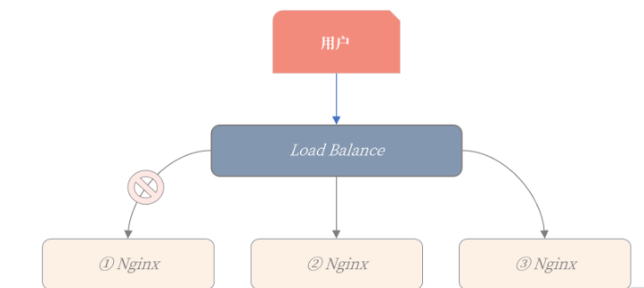
第一台 Ningx 服务器出现问题，导致服务不可用，Load Balance 负载均衡服务发现后，就可以直接把它剔除。
2-3 数据库高可用架构设计
- 数据持久化在数据库中，是有状态的服务；
- 数据库的容量比较大，Failover 的时间相对无状态服务会更多；
- 一些系统，如金融场景的数据库，会要求数据完全不能丢失，这又增加了高可用实现的难度。
其实从架构角度看，数据库高可用本身也是业务高可用，所以我们要从业务全流程的角度出发，思考数据库的高可用设计。
基于数据层的数据库高可用架构
基于数据层的数据库高可用架构，就是基于数据同步技术。当主服务器 Master 发生宕机，则故障转移到从服务器 Slave。
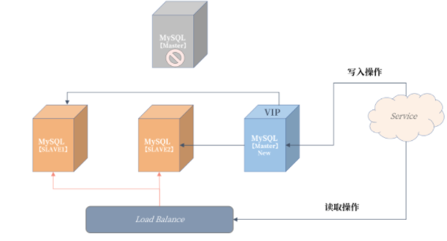
可以发现，我们原先的 Slave3 从服务器提升为了新主机，然后建立了新的复制拓扑架构，Slave2、Slave3 都连到新 Master 进行数据同步。
为了在故障转移后对 Service 服务无感知，所以需要引入 VIP（Virtual IP）虚拟 IP 技术，当发生宕机时，VIP 也需要漂移到新的主服务器。
那么这个架构的真正难点在于：
- 如何保障数据一致性；
- 如何发现主服务器宕机；
- 故障转移逻辑的处理；
基于业务层的数据库高可用架构
当一台数据库主服务器不可用，业务直接写另一台数据库主服务器就可以了。我们来看一下这个架构：
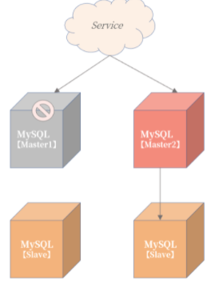
从上图可以看到，Service 服务写入 Master1 主服务器失败后，不用等待故障转移程序启用主从切换，而是直接把数据写入 Master2 主服务器。
这看似是一种非常简单、粗暴的高可用架构实现方式，但能符合这样设计的业务却并不多，因为该设计前提是状态可修改。
但这样设计的前提是整个服务的写入主键是可以进行跳单设计，且查询全部依赖主键进行搜索。
融合的高可用架构设计
一种业务和数据层相结合的高可用设计。这个架构可以解决宕机后，查询服务受限的问题。
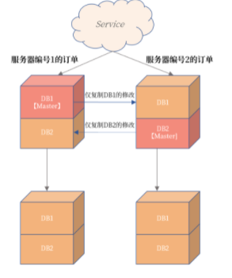
将不同编号的订单根据不同的数据库进行存放，比如服务器编号为 1 的订单存放在数据库 DB1 中，服务器编号为 2 的订单存放在数据库 DB2 中。
此外，这里也用到了 MySQL 复制中的部分复制技术，即左上角的主服务器仅将 DB1 中的数据同步到右上角的服务器。同理，右上角的主服务器仅将 DB2 中的数据同步到左上角的服务器。下面的两台从服务器不变，依然从原来的 MySQL 实例中同步数据。
这样做得好处是：
- 在常态情况下，上面两台 MySQL 数据库是双活的，都可以有数据的写入，业务的性能得到极大提升。
- 订单数据是完整的，服务器编号为 1 和 2 的数据都在一个 MySQL 实例上。
- 更重要的是，这样当发生宕机时，Service 服务的写入不受到影响，写入服务器编号为 1 的订单通过跳单设计写入 DB2。
- 同时，对于订单读取也不会受到影响，因为数据都是一个实例上，如：
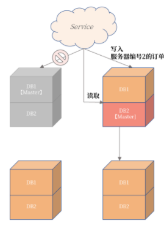
2-4 总结
- 高可用是系统所能提供无故障服务的一种能力，度量单位是几个 9；
- 线上系统高可用目标应不低于 99.995%，否则系统频繁宕机，用户体验不好；
- 高可用实现基础是：冗余 + 故障转移；
- 无状态服务的高可用设计较为简单，直接故障转移或剔除就行；
- 数据库作为有状态的服务，设计比较复杂（冗余通过复制技术实现，故障转移需要对应的高可用套件）；
- 数据库高可用有三大架构设计，请务必牢记这几种设计。
3 读写分离设计
逻辑日志的优缺点
MySQL 复制基于的二进制日志是一种逻辑日志，其写入的是每个事务中已变更的每条记录的前项、后项。
事务不能太大，否则会导致二进制日志非常大，一个大事务的提交会非常慢。
假设有个 DELETE 删除操作，删除当月数据，由于数据量可能有 1 亿条记录，可能会产生 100G 的二进制日志，则这条 SQL 在提交时需要等待 100G 的二进制日志写入磁盘，如果二进制日志磁盘每秒写入速度为 100M/秒，至少要等待 1000 秒才能完成这个事务的提交。
所以在 MySQL 中，你一定要对大事务特别对待
- 设计时，把 DELETE 删除操作转化为 DROP TABLE/PARTITION 操作；
- 业务设计时，把大事务拆成小事务。
对于第一点（把 DELETE 删除操作转化为 DROP TABLE/PARTITION 操作），主要是在设计时把流水或日志类的表按时间分表或者分区，这样在删除时，二进制日志内容就是一条 DROP TABLE/PARITION 的 SQL，写入速度就非常快了。
而第二点（把大事务拆分成小事务）也能控制二进制日志的大小。比如对于前面的 DELETE 操作，如果设计时没有分表或分区，那么你可以进行如下面的小事务拆分：
DELETE FROM ...
WHEREE time between ... and ...
LIMIT 1000;
上面的 SQL 就是把一个大的 DELETE 操作拆分成了每次删除 1000 条记录的小操作。而小事务的另一个优势是：可以进行多线程的并发操作，进一步提升删除效率。
MySQL 数据库中，大事务除了会导致提交速度变慢，还会导致主从复制延迟。
3-1 主从复制延迟优化
要彻底避免 MySQL 主从复制延迟，数据库版本至少要升级到 5.7
MySQL 的从机并行复制有两种模式。
- COMMIT ORDER： 主机怎么并行，从机就怎么并行。
- WRITESET： 基于每个事务，只要事务更新的记录不冲突，就可以并行。
而 WRITESET 模式是基于每个事务并行，如果事务间更新的记录不冲突，就可以并行。还是以“单线程每次插入 1000 条记录”为例，如果插入的记录没有冲突，比如唯一索引冲突，那么虽然主机是单线程，但从机可以是多线程并行回放
所以在 WRITESET 模式下，主从复制几乎没有延迟。那么要启用 WRITESET 复制模式，你需要做这样的配置：
binlog_transaction_dependency_tracking = WRITESET
transaction_write_set_extraction = XXHASH64
slave-parallel-type = LOGICAL_CLOCK
slave-parallel-workers = 16
因为主从复制延迟会影响到后续高可用的切换，以及读写分离的架构设计，所以在真实的业务中，你要对主从复制延迟进行监控。
3-2 主从复制延迟监控
Seconds_Behind_Master
SHOW SLAVE STATUS，其中的 Seconds_Behind_Master 可以查看复制延迟，如：
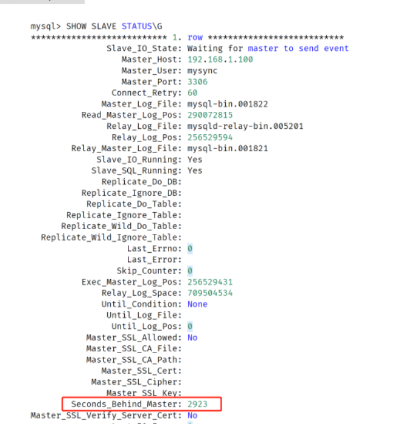
Seconds_Behind_Master 不准确！用于严格判断主从延迟的问题并不合适
- 它计算规则是（当前回放二进制时间 - 二进制日志中的时间），如果 I/O 线程有延迟，那么
Second_Behind_Master为 0，这时可能已经落后非常多了，例如存在有大事务的情况下； - 对于级联复制，最下游的从服务器延迟是不准确的，因为它只表示和上一级主服务器之间的延迟；
- 若主从时区不一样，那么 second_behind_master 也不准确；
3-3 心跳表
想要实时准确地监控主从复制延迟，可以在主服务器上引入一张心跳表 heartbeat，用于定期更新时间（比如每 3 秒一次）。于主从复制机制，主机上写入的时间会被复制到从机，这时对于主从复制延迟的判断可以根据如下规则：
主从延迟 = 从机当前时间 - 表 heartbeat 中的时间
表 heartbeat 和定期更新时间可以根据类似的设计：
USE DBA;
CREATE TABLE heartbeat (
server-uuid VARCHAR(36) PRIMARY KEY,
ts TIMESTAMP(6) NOT NULL
);
REPLACE INTO heartbeat(@@server_uuid, NOW())
我们创建了DBA库，以及库下的一张表 heartbeat，用于记录当前时间。
REPLACE 语句用于定期更新当前时间，并存入到表 heartbeat，表 heartbeat 在正常运行情况下只有一条记录。定期执行 REPLACE 语句可以使用定期的脚本调度程序，也可以使用 MySQL自带的事件调度器（event scheduler），如：
CREATE EVENT e_heartbeat
ON SCHEDULE
EVERY 3 SECOND
DO
BEGIN
REPLACE INTO DBA.heartbeat VALUES (@@server_uuid,NOW())
END
3-4 读写分离设计
读写分离设计是指：把对数据库的读写请求分布到不同的数据库服务器上。对于写入操作只能请求主服务器，而对读取操作则可以将读取请求分布到不同的从服务器上。
这样能有效降低主服务器的负载，提升从服务器资源利用率，从而进一步提升整体业务的性能。下面这张图显示了一种常见的业务读写分离的架构设计：
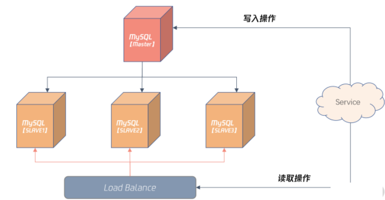
上图引入了 Load Balance 负载均衡的组件，这样 Server 对于数据库的请求不用关心后面有多少个从机，对于业务来说也就是透明的，只需访问 Load Balance 服务器的 IP 或域名就可以。
通过配置 Load Balance 服务，还能将读取请求平均或按照权重平均分布到不同的从服务器。这可以根据架构的需要做灵活的设计。
读写分离设计的前提是从机不能落后主机很多，最好是能准实时数据同步，务必一定要开始并行复制，并确保线上已经将大事务拆成小事务。
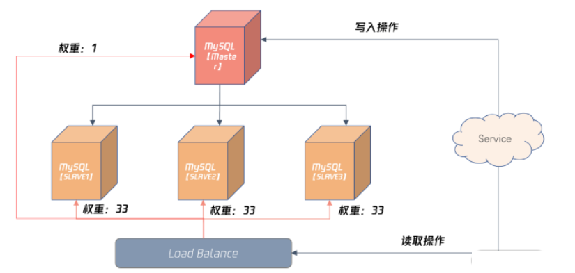
在 Load Balance 服务器，可以配置较小比例的读取请求访问主机，如上图所示的 1%，其余三台从服务器各自承担 33% 的读取请求。
3-5 总结
基于主从复制机制搭建一个读写分离架构，总的来说：
- MySQL 二进制日志是一种逻辑日志，便于将数据同步到异构的数据平台；
- 逻辑日志在事务提交时才写入，若存在大事务，则提交速度很慢，也会影响主从数据之间的同步；
- 在 MySQL 中务必将大事务拆分成小事务处理，这样才能避免主从数据延迟的问题；
- 通过配置 MTS 并行复制机制，可以进一步缩短主从数据延迟的问题，推荐使用 MySQL 5.7版本，并配置成基于 WRITESET 的复制；
- 主从复制延迟监控不能依赖
Seconds_Behind_Master的值，最好的方法是额外配置一张心跳表； - 读写分离是一种架构上非常常见的方法，你一定要掌握，并做好读写分离架构失效情况下的兜底设计。